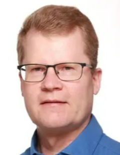
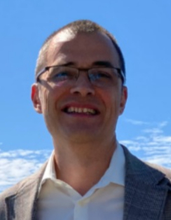
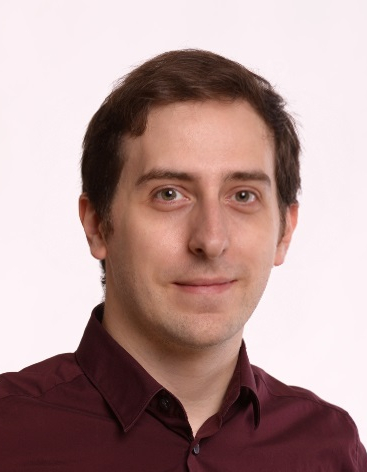

Overview
The summer school is organized by the Technical University of Denmark (DTU) in collaboration with Edu4Chip partner institutions and will take place in Denmark at the Technical University of Denmark campus in Kongens Lyngby (near Copenhagen).
The summer school is structured into two main parts:
- Online intro-day (August 11th) – Covering fundamental concepts in chip and digital design, with interactive exercises and project introductions.
- In-person program (August 18th to 22nd) – Held at DTU in Denmark, featuring in-depth lectures, hands-on activities, keynotes, and social events.
Target audience and scope
The summer school is designed for Bachelor students and Master students with a background in electrical engineering, computer science and engineering, or physics, the summer school emphasizes practical learning activities. PhD students are also welcome. Participants will acquire foundational knowledge of chip design workflows, develop skills in tools and methodologies, and explore cutting-edge developments in the field.
ECTS credit transfer and financial support
The Edu4Chip Summer School is organized within the framework of the Erasmus Blended Intensive Program (BIP), which allows for credit transfer among participating institutions. Upon successful completion within the BIP, students can be awarded 3 ECTS credits. For students enrolled at DTU, the summer school can be integrated into a more extensive 3-week special course, allowing them to earn 5 ECTS credits.
For details on financial support options, especially for students from Erasmus partner institutions and Edu4Chip partners, please refer to the Financial Support section.
Student pre-registration
Participation in the Edu4Chip Summer School is free of charge for students. However, due to limited capacity, we require all interested student participants to pre-register. This process helps us ensure a diverse and balanced group of students from different institutions and backgrounds.
To pre-register, please complete the Pre-registration by March 31th, 2025. After reviewing all applications, selected participants will receive a confirmation of admission via email and you will be prompted to the registration portal.
- Pre-register Now! (note: link is currently inactive - send your pre-registration at lpez@dtu.dk)
Important Information:
- Pre-Registration deadline: March 31th, 2025
- Student participation fee: Free of charge
- What’s included: All lectures, keynotes, program materials, snacks and lunches.
- Not included: Travel, accommodation, private expenses, and social activities (optional), which must be covered by participants.
For those in need of financial support for the expenses that are not included, please refer to the Financial support section for information on available funding options.
Student financial support
To support student participation in the Edu4Chip Summer School from countries outside Denmark, we offer two financial support options that can help cover travel and accommodation costs. These grants are designed to make it easier for students from different institutions to join the program in Copenhagen.
Erasmus Blended Intensive Program (BIP) grant
The Erasmus Blended Intensive Program (BIP) Grant is available to students from DTU Erasmus partner institutions. This grant helps cover travel and accommodation expenses for eligible participants.
Eligibility: Students enrolled at DTU Erasmus partner institutions. In the context of Edu4Chip, these are KTH Royal Institute of Technology, Technical University of Munich (TUM), and Tampere University (Finland).
Edu4Chip Grant
The Edu4Chip Grant provides financial support for students from Edu4Chip partner institutions to cover travel and accommodation expenses related to participation in the summer school.
Eligibility: Students from all Edu4Chip partner universities .
More information and applications
If you are from one of the Edu4Chip partners, see the contact person in your institution below. If you are from another university, you might still be eligible for a BIP grant. In this case, contact your institution's Erasmus office for application details and procedures.
For students from the Technical University of Munich (TUM):
| Contact person: PD Dr.-Ing. habil. Michael Pehl Mail: m.pehl@tum.de Phone: +49 (89) 289 - 28252 Homepage: Link to homepage |
For students from KTH Royal Institute of Technology:
| Contact person: Prof. Ahmed Hemani Mail: hemani@kth.se Phone: +46 8 790 44 69 Homepage: Link to homepage |
For students from Tampere University (TAU):
|  | Contact person: Prof. Timo Hämäläinen Mail: timo.hamalainen@tuni.fi Phone: +35 8408490777 Homepage: Link to homepage |
For students from Institut Mines-Télécom (IMT):
|  | Contact person: Prof. Jean-Max Dutertre Mail: dutertre@emse.fr Phone: +33 (0)4 42 61 67 36 Homepage: Link to homepage |
We encourage all interested students to apply early to secure funding support.
Program and content
Over six days, including the online introductory day, participants will engage in lectures, hands-on exercises, and keynotes delivered by leading academics and industry experts. The program highlights topics such as agile hardware design, analog/mixed-signal circuits, verification techniques, and asynchronous circuits.
The Edu4Chip Summer School is structured into two main parts: an Online intro-day and an In-person program in Copenhagen. Find below the schedule, and a detailed description of the content of the online intro-day, in-person lectures, keynotes, and other activities, as well as the learning objectives.
Schedule (tentative)

Online intro-day (August 11th)
The online into-day provides an overview of the Edu4Chip Summer School, covering fundamental concepts in chip and digital design. Participants will engage in interactive exercises and receive guidance on the student project to prepare for the in-person sessions. Find below a summary of the intro-day activities.
-
Introduction to the Summer School
An overview of the summer school, its objectives, and an introduction to the program, participants, and instructors. -
Brush-up on Digital Design
A refresher session focusing on essential digital design concepts to ensure all participants are aligned with the foundational knowledge. -
Interactive Web-Based Exercises
Hands-on activities where participants will design and simulate an integrated circuit using open-source tools. -
Outline of the Student Project
Introduction to the student project, detailing objectives and expected outcomes. Projects will be carried out during the summer school. -
Q&A and Discussion Session
An interactive session for participants to engage with instructors, ask questions, and discuss key topics covered throughout the day and planned for the physical part of the summer school.
In-person program (August 18th to 22nd)
The in-person program offers a blend of lectures, hands-on activities, and keynotes. In addition to the lectures and keynotes, we also planned some activities to connect, relax, and explore both the academic environment and the vibe of Copenhagen. Find the details below.
Lectures
-
Chip Design Process Overview
by Prof. Timo Hämäläinen, Tampere University
This lecture provides an introductory overview of the chip design process, covering key steps from initial specification and architecture design to RTL development, verification, synthesis, physical design, fabrication, and final testing of the chip. -
Agile Hardware Design in HDL
by Prof. Martin Schoeberl, Technical University of Denmark
This lecture introduces agile hardware design principles applied to HDL development, focusing on iterative and flexible design methodologies using Chisel to enhance productivity, adaptability, and rapid prototyping in digital circuit design. -
Time-Discrete Analog Circuits
by Dipl.-Ing. (Univ.) Markus Dietl, Technical University of Munich
This lecture explores the principles of time-discrete analog circuits, focusing on their design, analysis, and applications in modern electronic systems where analog signals are processed at discrete time intervals. -
Chip Design Process and Challenges
by [To Be Announced]
This lecture offers an in-depth overview of the chip design process, highlighting common challenges such as design complexity, power, I/O, clock distribution, etc. -
Verification of Digital Circuits
by the company Syosil
This lecture, delivered by experts from Syosil, a Danish company specializing in verification solutions, covers the verification of digital circuits, focusing on methodologies and tools used to ensure design correctness (simulation, formal verification, etc.). -
Systems on Chip and Interconnects
by Assoc. Prof. Luca Pezzarossa, Technical University of Denmark
This lecture focuses on systems-on-chip (SoC) architectures and interconnect technologies, exploring how different components communicate efficiently within complex chip designs to optimize performance and scalability. -
Asynchronous Circuits
by Emeritus Prof. Jens Sparsø, Technical University of Denmark
This lecture introduces asynchronous circuits, which are digital circuits that operate without a global clock. This class of circuits can lead to advantages in terms of power efficiency, performance, and robustness compared to traditional synchronous designs.
Keynotes
- From the 1st Transistor to FinFETs and Beyond
by Assoc. Prof. Flemming Stassen, Technical University of Denmark
This keynote explores the evolution of transistor technology, tracing its journey from the first prototypes to modern FinFETs, and providing insights into emerging trends and future advancements in the field. - Low-Power Hardware Support for AI by the company Demant This keynote presents and discusses hardware strategies for supporting AI applications on a constrained power budget, presented by experts from Demant, a leading company in hearing aid technology.
- Basic Concepts in Modeling: A Discussion of George Box’s Famous Statement ‘All models are wrong, some are useful’ with a Strong Focus on Models in Chip Design by Prof. Dr.-Ing. Wolfgang Ecker, Infineon - Technical University of Munich An examination of modeling principles in chip design, reflecting on the balance between model simplicity and utility (tentative description).
Other activities
-
Quickfire Introduction of Students
A fast-paced session where participants briefly introduce themselves to get to know each other. -
Student Presentations (counts as Exam)
An interactive poster/presentation session where students present their project outcomes, followed by an evaluation to conclude the summer school. -
Visit and Tour of Copenhagen
A tour to provide participants with an opportunity to explore the city’s vibe and architecture. -
Hike and Picnic in Dyrehaven (Deer Park)
Outdoor walk and picnic in Dyrehaven (the Deer Park), known for the free-roaming deers. -
Jogging Route on DTU Campus
A casual group jogging session around the DTU campus. -
Social Dinner in Copenhagen
A social dinner in Copenhagen for all the participants.
Learning objectives
A student who has successfully completed the summer school will be able to:
- Explain the fundamentals of semiconductor devices.
- Explain all steps in the chip design process.
- Apply principles of agile hardware design to describe and implement digital systems.
- Explain and analyze analog and mixed-signal design challenges.
- Explain and use simple verification tools to ensure proper hardware functionality.
- Describe the importance of sustainability for hardware designs.
- Compare asynchronous circuits with synchronous designs to evaluate their advantages and limitations.
- Illustrate the role and functionality of on-chip interconnects in modern chip architectures.
Questions and contacts
If you have any questions about the Edu4Chip Summer School, feel free to reach out to us. Whether you need more information about the program, registration process, participation grants, or logistics, we are here to help!
|  | Contact person: Assoc. Prof. Luca Pezzarossa Mail: lpez@dtu.dk Homepage: Link to homepage |